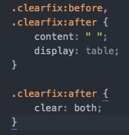

What did you learn last lesson?
Default browser styles
Browsers typically have default styles that they apply to certain elements. Unfortunately, these styles are sometimes different for each browser.
This means that if you are not 'normalising' your styles before starting to write code, you may run into difficulties making everything look the same across browsers.
Time to level the playing field!
Normalize.css vs reset.css
Normalize.css maintains some common default styles for certain elements (heading sizes etc), but normalises necessary styles across all browsers.
Reset.css completely resets all elements' styles, so that all elements are starting from the same base level.
Normalize.css vs reset.css
Let's open up an example project to take a peek.
CSS display
For the purpose of basic structure and styling, elements typically have some default styles before any code is even written (unless you're using reset.css!).
Some elements have more default styles than others, however all elements fall into one of two categories: 'block' or 'inline' elements.
Block-level elements
Block-level elements are elements that, when no width is set, will expand to fit the length of their container. This means they'll try to occupy the whole row...they're greedy!
Block-level elements have the following characteristics:
-
When no
widthis set, will expand to the width of its container. -
marginandpaddingpush elements away both horizontally AND vertically. -
Ignores the
vertical-alignrule.
Block-level element examples
<div>, <section>, <header>,
<footer>, <ul>, <ol>, <li>, <table>, <fieldset>, <figure>, <aside>,
<article>, <nav>, <blockquote>
Inline elements
Inline elements fit perfectly in the flow of content and allow multiple elements on a row. This makes them perfect for use within content. They're also useful when you want elements to sit next to each other on a row.
Inline elements have they following characteristics:
- Sit in the flow of content.
-
marginandpaddingonly push elements away horizontally. -
Are subject to
vertical-align. -
Do not respond to set
heightorwidth.
Inline element examples
<span>, <em>, <i>, <b>, <strong>, <img>, <a>, <input>, <button>,
<label>, <select>, <abbr>, <textarea>
Codepen
Let's create a quick pen together to go through the difference.
And to also take a look at the 'hybrid' display property of inline-block.
Inline-block elements
As we saw in the example, elements with display: inline-block;
contain characteristics from both block-level and inline elements.
Here's a breakdown of those characteristics:
- Sit in the flow of content, if no margins or padding have been set.
-
marginandpaddingpush elements away both horizontally AND vertically. -
Are subject to
vertical-align. -
Responds to set
heightandwidth.
Hiding elements
Sometimes we might want to hide elements on the page. An example of one of these times might be when there is a dropdown menu that we want to hide until the user hovers over a menu item.
display: none; vs visibility: hidden;
When elements are inserted into the DOM Tree, they are being 'parsed'. But before they are actually placed on the page, they need to be 'rendered'.
display: none;
Elements with display: none; are parsed, but not rendered. Meaning
that surrounding elements act like there is no element present.
visibility: hidden;
Elements with visibility: hidden; are parsed AND rendered. This
means that the hidden element still occupies the space it otherwise would have.
Codepen example
Click here
Positioning
Having a good understanding of CSS positioning is crucial for effective layout of a page. However, it is an often misunderstood property, that can quickly cause issues if used incorrectly.
Position properties
The position property can have one of 5 possible values:
- Static (default)
- Relative
- Absolute
- Fixed
- Sticky (little support)
position: static;
This position declaration is the default value on all elements, if no other position value has been set. It contains the following characteristics:
- Element maintains normal behaviour, sitting in the flow of the document.
-
Does not respond to
top,right,bottom,leftorz-indexproperties.
position: relative;
- If no other properties are set, the element will maintain all normal behviour.
-
Does respond to
top,right,bottom,leftandz-indexproperties. - If one of these other properties are set, the element will change position on screen, but the original position of the element will remain, as if the element was still there.
position: absolute;
- Pulls the element out of the normal flow of the document. Meaning other elements will fill the space left by the absolutely positioned element.
- Block-level elements no longer stretch to fill the width of the container.
-
Does respond to
top,right,bottom,leftandz-indexproperties. -
Is positioned relatively to its closest ancestor with a position property
other than
position: static;.
position: fixed;
- Pulls the element out of the normal flow of the document. Meaning other elements will fill the space left by the fixed position element.
- Block-level elements no longer stretch to fill the width of the container.
-
Does respond to
top,right,bottom,leftandz-indexproperties. -
Is positioned relatively to the screen's viewport. Will maintain this position on the
viewport until another
positionproperty is set.
Codepen example
Click here
z-index
The z-index property specifies the z-order of an element
and its descendants.
This relates to how elements are 'stacked' in the viewport and therefore which elements should appear closer to the user and sit on top of other elements.
z-index (cont.)
Remember, a position value other than static has
to be set in order for z-index to work.
The z-index value can literally be any number you like. So, as
you can imagine, it can get messy very quickly. Always be sure to define a
z-index scale for a project to manage this.
Floats
The CSS float property takes elements out of the normal flow
of the document. The main values are none (default), left and right.
When floated left or right, an element will be placed to the given side of its container, where inline elements or content can flow around it.
Codepen example
Click here
Clearfix

The clearfix class is always assigned to the PARENT element
of floated elements. The styling creates a new block formatting context, which
effectively maps out an element's contents. This forces the parent's height
to register its floated children's heights again.
Floats for layout
Due to the fact that floated elements allow other content and elements to wrap around them, floats are perfect to use for layouts in CSS.
Elements used for structure are always block-level elements. However, when
float is applied, they no longer stretch to fill their container.
Codepen example
Click here
clear
The clear property is directly related to floats. When elements are
floated, other subsequent elements may try and fit horizontally beside the floated
element. In order to re-position the element correctly a clear
property must be assigned.
The most commonly used clear declaration is clear: both;
clear (cont.)
The main values for clear are none, left, right and both:
- none: the element does not clear past floated elements.
- left: the element clears the left floated elements.
- right: the element clears the right floated elements.
- both: the element clears both right and left floated elements.
CSS clear vs .clearfix
clear is a CSS property that is placed on an element to drop
it below floated elements.
clearfix is a class that is placed on a parent element (in the HTML)
when its height has collapsed due to its children being floated.
Try some layouts!
Work from the layout-challenge.pdf file and see how far you can get creating the different layouts using what you've learned today.
Grid frameworks
Luckily there are grid frameworks to do all of the hard work for us...
...but that's for a later date!
Grid frameworks
Luckily there are grid frameworks to do all of the hard work for us...
...but that's for a later date!
Key Takeaways
-
We use normalize.css or reset.css to normalise default browser styles
-
Elements can either be block-level elements or inline elements. There is also a third
displayproperty ofinline-blockthat acts as a hybrid. -
The
positionproperty is used to change the position of elements to eitherstatic,relative,absoluteorfixed -
Floats are often used for layout purposes, but beware the effect they can have on their parent container